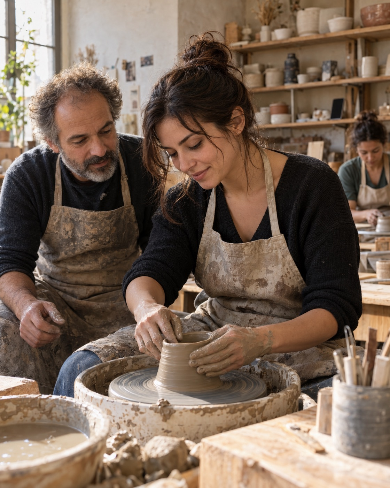

Scoperta1 / 3
Passioni che non avresti cercato
Eventi, attività e occasioni scelti sul tuo profilo, comprese quelle conosciute finora solo attraverso i social.
Eventi, persone, casa e opportunità in un'unica app.
Scorri per entrare
Cosa trovi qui
L'idea
CEnTRO prende ciò che funziona dei social e lo usa per un altro scopo: portare le persone fuori dallo schermo.
Eventi, attività e occasioni scelti sul tuo profilo, comprese quelle conosciute finora solo attraverso i social.

Uscire è più facile quando non si parte da soli. CEnTRO ti fa trovare compagnia per ciò che ti interessa.
Il risultato non si misura nel tempo passato in app, ma in quello vissuto fuori dallo schermo: a fare ciò che ci piace, anche insieme ad altre persone.
Le finalità del progetto sono benessere, inclusione e crescita personale.
Come funziona


TAPPA 1 / 5
Un questionario fa emergere gusti, interessi, preferenze e predisposizioni. Da qui parte tutto ciò che l'app propone.
TAPPA 2 / 5
Il feed mette per prime le proposte più affini: eventi, attività della community, bandi e occasioni del territorio.
TAPPA 3 / 5
Trovi persone affini con cui partecipare. Una serata che da soli non si sceglierebbe diventa un'occasione per conoscersi.
TAPPA 4 / 5
L'esperienza succede fuori dall'app. Dopo, una valutazione rapida rende più precisi i suggerimenti successivi.
TAPPA 5 / 5
Il gruppo nato da un'attività ne sceglie insieme un'altra. L'app resta utile anche dopo i primi incontri.
Dentro l'app
Il feed mette per primi gli eventi più affini, anche quelli che non avresti mai cercato.
Chiunque propone un'attività, Nia aiuta a scriverla e arrivano persone affini con cui farla.
Lo spazio per domande, richieste, consigli e risposte tra le persone della città.
Bandi, concorsi ed esperienze offerte dalle aziende, scelti per interessi, requisiti e scadenze.
Annunci collegati a esigenze pratiche e preferenze di convivenza, con un confronto tra futuri coinquilini.
Per le aziende
Analisi
aggregate
del pubblico
Il tuo pubblico, in sintesi
Interessi, gusti e tendenze emersi dal questionario aiutano ad adattare temi e format, confrontare il pubblico delle iniziative, trovare interessi poco serviti e progettare nuove collaborazioni.
L'obiettivo
Per chi investirà
CEnTRO collega servizi utili alle persone a motivi concreti per cui le aziende scelgono di pagare.
Perché le aziende pagano
Il vantaggio da dimostrare
Far incontrare meglio persone e offerte del territorio, creando valore continuo per entrambe.
Sono risultati da verificare. Le analisi descriveranno tendenze aggregate e distingueranno le iscrizioni dalla partecipazione effettiva.
A che punto siamo
Chi sono

Fondatore di CEnTRO
Unisco psicologia, dati e vendita: le tre cose che servono per far incontrare persone e offerte.
Esperienza
Cosa porto a CEnTRO
Inglese B2Cinese HSK 1Relazione con il pubblico
Nia
La tua mappa per scoprire la città
Cosa cerchi oggi?
Esempio dimostrativo con contenuti simulati.